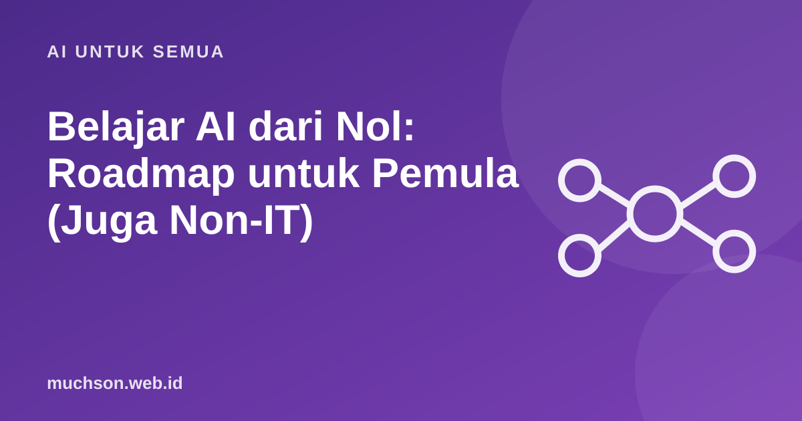

Beranda › Artikel › AI untuk Semua
AI untuk SemuaBelajar AI dari Nol: Roadmap untuk Pemula (Juga Non-IT)
Ingin belajar AI tetapi bingung mulai dari mana? Sebagian roadmap langsung menyarankan kalkulus dan aljabar linear, yang membuat banyak orang mundur. Padahal tidak semua orang perlu menjadi peneliti AI. Artikel ini membagi jalur belajar AI menjadi tiga, sesuai tujuan Anda, lengkap dengan urutan materi dan sumber gratis.

Pilih jalur sesuai tujuan
Jalur 1: pengguna cerdas (semua profesi)
- Konsep dasar: apa itu AI, machine learning, LLM, dan batasannya (halusinasi, bias).
- Menulis prompt: peran, konteks, tugas, format, batasan.
- Privasi dan etika: data apa yang tidak boleh dimasukkan.
- Terapkan di pekerjaan: email, rapat, riset, spreadsheet, presentasi.
- Evaluasi: cek fakta, bandingkan hasil, ukur waktu yang dihemat.
Kursus gratis seperti Elements of AI dari University of Helsinki dirancang untuk orang tanpa latar belakang teknis dan sangat cocok untuk jalur ini.
Jalur 2: pembuat solusi
Proyek latihan yang baik: chatbot tanya jawab dari dokumen SOP kantor, otomasi ringkasan email harian, atau asisten yang mengisi spreadsheet dari formulir. Proyek nyata kecil jauh lebih bermakna daripada menonton puluhan jam video.
Jalur 3: AI/ML engineer
| Tahap | Materi | Perkiraan |
|---|---|---|
| 1. Pemrograman | Python, Git, struktur data dasar | 2-3 bulan |
| 2. Data | pandas, visualisasi, SQL, statistik dasar | 2-3 bulan |
| 3. Matematika secukupnya | aljabar linear, kalkulus dasar, peluang | berjalan paralel |
| 4. Machine learning klasik | regresi, klasifikasi, evaluasi model (scikit-learn) | 2-3 bulan |
| 5. Deep learning | jaringan saraf, PyTorch, CNN, Transformer | 3-4 bulan |
| 6. Rekayasa dan produksi | API, deployment, pemantauan, MLOps dasar | berkelanjutan |
Perkiraan waktu di atas untuk belajar konsisten sekitar 8-10 jam per minggu. Setiap tahap sebaiknya ditutup dengan satu proyek yang bisa ditunjukkan di portofolio.
Sumber belajar gratis yang tepercaya
| Sumber | Cocok untuk |
|---|---|
| Elements of AI (University of Helsinki) | Jalur 1, tanpa coding |
| Google Machine Learning Crash Course | Jalur 2-3, pengantar ML dengan latihan |
| Dokumentasi resmi Python dan pandas | Dasar pemrograman dan data |
| fast.ai: Practical Deep Learning for Coders | Jalur 3, deep learning praktis |
| Dokumentasi API penyedia model AI | Jalur 2, membangun aplikasi |
Hitung rencana belajar
Apa pun jalurnya, prinsipnya sama: belajar sambil membuat. Satu alat AI kecil yang benar-benar dipakai rekan kerja Anda lebih berharga daripada sertifikat yang tidak pernah diterapkan.
Tanya jawab
Bisakah belajar AI tanpa latar belakang IT?
Harus pintar matematika untuk belajar AI?
Bahasa pemrograman apa untuk AI?
Berapa lama belajar AI sampai bisa bekerja?
Sumber dan bacaan lanjut
- Elements of AI (University of Helsinki)
- Google: Machine Learning Crash Course
- fast.ai: Practical Deep Learning for Coders
- Roadmap belajar Python dari nol (artikel terkait)